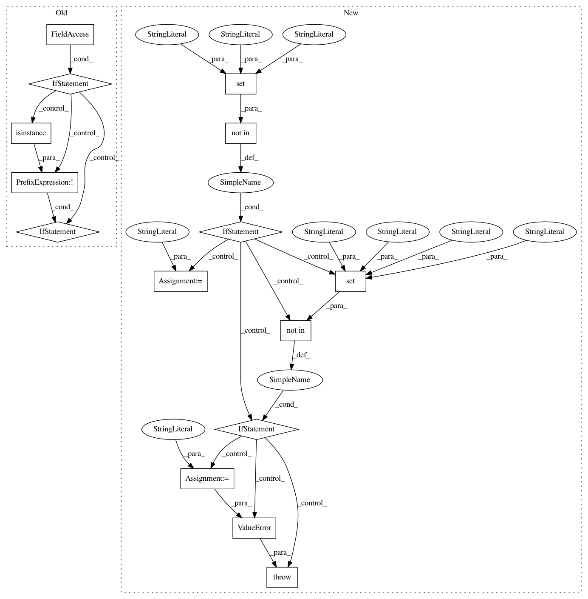

a06782717794ff8e88875f2e98aca168c5fe617a,pyannote/audio/embedding/generators.py,SpeechSegmentGenerator,__init__,#SpeechSegmentGenerator#Any#Any#Any#Any#Any#Any#Any#Any#Any#Any#,69
Before Change
self.label_min_duration = label_min_duration
self.in_memory = in_memory
if self.in_memory:
if not isinstance(feature_extraction, RawAudio):
msg = (
f""in_memory" option is only supported when "
f"working from the waveform."
)
raise ValueError(msg)
self.weighted_ = True
self._load_metadata(protocol, subset=subset)
After Change
for label in annotation.labels():
// get all segments with current label
timeline = annotation.label_timeline(label)
// remove segments shorter than "duration"
segments = [s for s in timeline
if s.duration > self.duration]
// corner case where no segment is long enough
// and we removed them all...
if not segments:
continue
// total duration of label in current_file (after removal of
// short segments).
In pattern: SUPERPATTERN
Frequency: 3
Non-data size: 15
Instances
Project Name: pyannote/pyannote-audio
Commit Name: a06782717794ff8e88875f2e98aca168c5fe617a
Time: 2020-01-22
Author: bredin@limsi.fr
File Name: pyannote/audio/embedding/generators.py
Class Name: SpeechSegmentGenerator
Method Name: __init__
Project Name: pyannote/pyannote-audio
Commit Name: 22ebf9884f9fe6fe25a4bdf0d916ab0540ed61cb
Time: 2019-12-20
Author: bredin@limsi.fr
File Name: pyannote/audio/embedding/generators.py
Class Name: SpeechSegmentGenerator
Method Name: __init__
Project Name: pyannote/pyannote-audio
Commit Name: 4d0dc3496c221c4b1ec77fe15cb304fdc5fd800c
Time: 2020-01-09
Author: bredin@limsi.fr
File Name: pyannote/audio/embedding/generators.py
Class Name: SpeechSegmentGenerator
Method Name: __init__